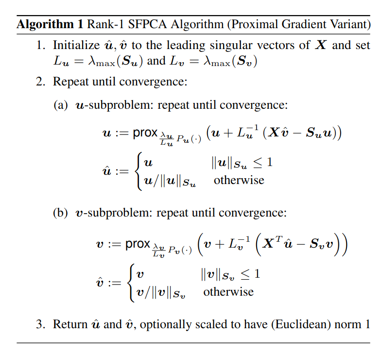
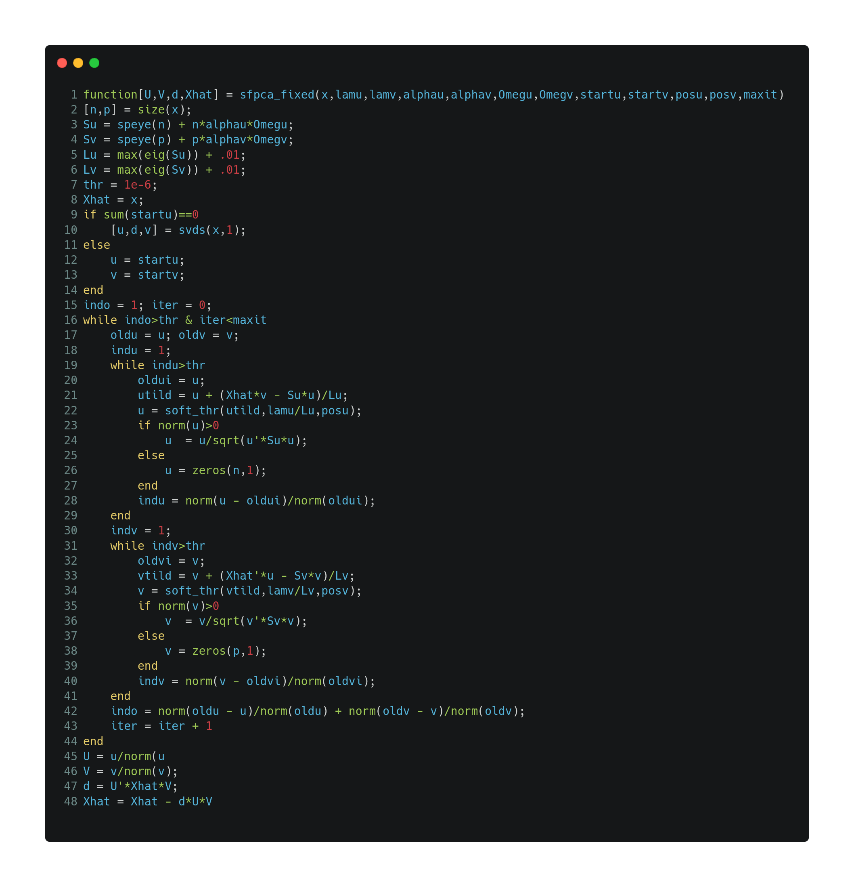

![]()
It is a bit of meme that academic software is disappointing, because it either fails to solve applied problems or behaves unreliably in production. I don’t think these are actually the right goals for academic code. Rather, I think academic code should act as a medium for precise communication, as a baseline for correctness, to demonstrate proofs-of-concept, and as hacky tool to solve problems intermittently and semi-reliably. I propose a substantial re-assessment of software responsibilities for theorists and methodologists in particular: rather than trying (and potentially failing) to write user-facing code, these folks should focus on the more achievable task of writing psuedo-code, reference implementations and careful documentation that software engineers can later use as the basis for user-facing software.
This change would relax the pressure on methods producers to be perfect unicorn researcher-programmers. It acknowledges that software engineering labor is distinct from research labor, even though software is often a form of research infrastructure. It acknowledges that academics are largely paid to produce research rather than code, and also that academics are often better at producing research. It also requires some humility, to accept that there are lots of unsuccessful attempts to write code within the academy, and that it is isn’t worthwhile to write code intended for other people if they can’t use it.
My hope is that this kind of re-orientation might also lead to new opportunities for producing user-friendly software. Applied researchers could make smaller, more reasonable requests of their theoretical colleagues. Academic departments could hire research software engineers, and allocate their resources in ways that reflect their relative interest in research products and research infrastructure. And the folks who eventually do translate methods into software could start with a useful leg up.
A typology of methods software
There are a couple different kinds of methodological software that I personally find valuable:
- Pseudo-code
- Reference implementations
- Proofs-of-concept
- Hobbyist code1
- Production code
Pseudo-code, reference implementations and proofs-of-concept are not user-facing, but hobbyist code and production code are.
Pseudo-code. Pseudo-code describes an algorithm in formal and unambiguous language. The purpose of psuedo-code is to communicate and help others understand what an algorithm does. Pseudo-code is useful to methods producers who want to study theoretical properties of an algorithm, and also to software engineers or translational workers who want to actually implement a method. Pseudo-code is not runnable code.
An example of nice pseudo-code is given in Allen and Weylandt (2019):

This pseudo-code gives a clear conceptual overview of the algorithm, and most of the information needed for implementation. In practice, there are a number of minor implementation details that do not appear here: how to compute the singular values, the implementation of the proximal operator, and how to test for convergence. This small amount of remaining ambiguity is exactly why it’s valuable to complement the pseudo-code with a reference implementation.
Reference implementation. A reference implementation is a basic translation of pseudo-code into runnable code. The purpose of a reference implementation is to generate results on toy problems that can be used to test future implementations of an algorithm. Like pseudo-code, reference implementations should to be exceptionally readable. It is best if reference implementations run in a limited number of concrete settings and avoid complicated language features. Both the original author of a reference implementation and third parties should feel very confident about correctness. The notation in a reference implementation should also closely match the notation in the paper or document that proposes the algorithm. Inputs and outputs should be carefully documented, and tests on some key examples are valuable. However, reference implementations primarily designed to be read rather than run. Ideally, reference implementations are written in freely available languages.
The SFPCA algorithm above was originally accompanied by the following MATLAB reference implementation:

This reference implementation has all the computational details you need to implement SFPCA. I know this because I ended up implementing SFPCA in both R and C++ and testing against the MATLAB above.
Proof-of-concept. Proof-of-concept implementations are designed to run on research problems. They include features that researchers need to get their research done. Proof-of-concept implementations do not need to be fully featured or well-designed or computationally efficient. They should typically be released once and un-maintained. The code should primarily be useful for other researchers who also want to use the code for research. Proof-of-concept implementations can take a substantial amount of development labor, but this labor is unlikely to benefit anyone beyond the original authors of the scripts. Sharing proof-of-concept implementations is important for reproducibility purposes, but a reference implementation (easier to understand, at less risk of bit rot) or hobbyist implementation (actively maintained, documented, user-friendly) is a more meaningful contribution to the community at large. While proof-of-concept implementations enable future research, that future research is typically quite painful2.
My CitationImpute code is an example of proof-of-concept code. That worked enough for me to publish Hayes and Rohe (2024). Some of the code and documentation is even pretty nice, but the point is that this code is primarily for myself. It’s not particularly ready for someone else to use. It breaks in unexpected and barely documented ways: don’t, for instance, pass in any missing data. There are actually two separate implementations of the underlying algorithm, with no explanation for why this is the case. The other day someone asked for a demonstration of how to actually use the code, and it took me four or five hours to write a (still very terse) vignette. I would not put this code in production. Do I trust the code and the results in my paper? Absolutely, I wrote a lot of correctness tests and simulated to show that estimation error goes down! Do I think that someone else could use this code to do something useful? Maybe, but I think it’s likely that they’d have a bad time. Another example of a proof-of-concept implementation of
AdaptiveImputeis here. This codes works and was enough to publish a paper, but computationally, there are a lot of unexplained things happening and there’s a small bug or two!Hobbyist software. Hobbyist software, for lack of a better name, is designed for methods consumers. The goal is to solve practical but technically approachable problems. Hobbyist code should be usable, well-documented, tested and released in an easily installable form. The authors should provide at least some ongoing maintenance for the code. They should also make a genuine effort to disseminate the software by advertising it and providing tutorials on its use. The internal structure of the code does not have to be perfect, but it needs to be understandable enough to have moderate faith in its correctness. Hobbyist software doesn’t necessarily need to have the reliability of software for a big production system, but it should solve most problems that an applied researcher might tackle on a personal computer. Note that hobbyist software takes a substantial amount of labor to develop, and the primary benefit is to the community of methods consumers.
I consider my
fastRGpackage to be hobbyist level code. It’s documented, somewhat tested, and I use it myself on a frequent basis. I also know that other people use the package on a frequent basis, and presumably they would not if it were unbearably buggy or dysfunctional. Most importantly, in contrast tofastadi::citation_impute(), I feel good about people usingfastRG.Production code. Lastly, there is software that is ready for production, by which I mean that is reliable, feature-complete and scalable to technically challenging settings. These implementations should follow software engineering best practices, use good defaults, and have responsive maintenance teams, as well as a semi-frequent release cycle and extensive documentation. The primary differences between a hobbyist implementation and a production implementation are the internal design of the software, increased UX polish, and thorough testing. Production implementations should handle errors and edge cases gracefully and produce results that are reliably correct. The purpose of production code is to enable developers to build large and automated systems. Due to system and scaling constraints, production implementations often look very different from pseudo-code. Documentation should clearly describe how and why the implementation deviates from the pseudo-code.
Some examples of production-ready software include the tidyverse, Stan, and Jax.
A modest proposal
My first proposal is that academics writing methodological code should state the goals and the audience of their code. One way to do this would be with Github badges. For instance:
purpose: reference-implementation,purpose: proof-of-concept-implementation,purpose: reliable-on-small-to-moderate-problems, orpurpose: production-ready.
Or potentially:
audience: theorists doing methodological research,audience: software engineers who want to make this useful to the broader community, andaudience: applied scientists.
The language needs work, but by adding these labels to the software we produce, we can then evaluate code by asking if it achieves it’s stated goal, rather than some other goal that someone else made up.
What I want from methods producers
I want to methods producers to:
- share pseudo-code for their methods,
- share a proof-of-concept implementation that is sufficient to reproduce computational aspects of their work, and
- share a reference implementation distinct from the proof-of-concept code, which is exceptionally clear and readable.
The goal of these outputs is to facilitate communication, understanding, and future software development. I consider these products to be an essential part of research. In particular, I personally think of these code products as a minimum standard, and I don’t assign any additional intellectual credit for achieving this basic goal. If an academic researcher doesn’t share these outputs, it actively detracts from capacity to continue the research enterprise and methods dissemination efforts, and the intellectual contribution is incomplete.
In contrast, I don’t think that it is necessarily a good use of methods producer time to user-facing code. Especially in academia, methods producers are often not incentivized to make tools for methods consumers. If methods producers go above and beyond and do in fact create hobbyist or production-ready code, we should clearly acknowledge this as a meaningful contribution. However, this contribution is a software development contribution rather than a research contribution.
I want to free method producers from unreasonable expectations, which are sometimes explicit and sometimes implicit. There are many genuinely constructive attempts to improve the quality of statistical software3. To my eye, the aspirational goal of these attempts is often to get people to write production-ready code. I think it’s perfectly okay not to do this, especially if you set expectations about what you actually want your code to do4.
On the other hand, I want to clarify that not all code is created equal. Within academia there is sometimes an attitude that code is code, with no gradations in quality or usability. This is not the case, and a lot of academics release code with unrealistic expectations about how valuable it will be to others. Barely-intelligible, thousand-line spaghetti scripts are not meaningful attempts at methods dissemination. Sharing that code merely means you have completed the research, and have done so in a way that will greatly frustrate future researchers who wish to extend your work.
Who should write user-facing software?
I was a little surprised to realize this, but I think my answer is paid professionals. More generally, people who want a nice implementation of method should pay for the nice implementation of that method. This can take a number of different forms:
- industry paying software engineers to produce in-house or open-source implementations of methods,5
- academic departments hiring research software engineers,
- philanthropic efforts subsidizing open-source work, and
- applied researchers with software chops, implementing methods to facilitate their own research.
This view is somewhat less expansive than other visions of software and methodological dissemination. My opinion is that not every method is important or useful enough to justify a high quality implementation, and we mainly want quality software for key methods that get used a lot. I think this follows naturally from a desire to use resources in an efficient manner, but also because software that people use is better software, and software that people don’t use is subject to bugs and bit-rot and death.
You’ll note that academics do not feature majorly on the list of folks who I think should write user-facing software, mostly because I suspect it’s incentive-incompatible for most academics to write that kind of software. I don’t think this is uniformly the case, and again I think times are changing, but as a general rule I think it holds. The issue is two-fold: first, academics are ill-prepared to write software for methods consumers. Writing code for methods consumers is tough. It takes a lot of software engineering labor. But beyond this, once you start writing hobbyist or production grade code, you start getting evaluated by two different sets of standards at the same time. Methods producers evaluate the technical and theoretical quality of your work. But methods consumers evaluate the software design and usability of your software. This is tough but fair: methodological software needs to both correct and usable. Unfortunately, a lot of existing software clears only one of these bars.
The second reason why I don’t think that academics should write user-facing methods software is that the credit that academics get for code is inconsistent and somewhat volatile and a rough thing to stake a tenure case on, depending on your discipline and department. If you write research software, not only are the methods producers and the methods consumers both holding your work to high standards, it’s very possible that neither is giving you research credit for your work: good software is neither a novel method, nor is it an intriguing scientific result. While translating methods into software enables research, but it is rarely research itself. I think it’s pretty fair for tenure committees to take any number of opinions on how to value research proper versus research infrastructure. Research infrastructure definitely is valuable, but exactly how valuable it is relative to research is ambiguous to me.
The best way to get academic credit for writing software, I think, is to get authorship on the original methods paper. Then both the paper and the software accumulate citations (the software almost always get cited orders of magnitude more often than the content of the paper does) and this is good for everybody involved. The trick is timing: the software has to come out at the same time as the paper. This is a pretty rare occurrence, because lots of software is developed aftermarket of the original methods paper6. An alternative idea that has become somewhat popular in recent years is to cite software packages in academic papers. I am somewhat ambivalent about this. It seems like a fine thing to do, but I’m not sure how much it actually helps people get tenure. I guess do it in the hopes that eventually people do get credit for citations to their software packages.
Solving a slightly different problem
On the whole, I don’t anticipate a large availability of translational labor in the near future. I also don’t anticipate that methods will disseminate quickly and effectively without this labor, because methods dissemination requires user-facing software. I’m at peace with this, since academic compensation for user-friendly software is weird and often inadequate, and I think the current state of affairs is actual pretty reasonable for a certain priorization of research relative to research infrastructure. It’s very possible this leaves us with an infrastructure problem, where people want to use methods, but the software doesn’t exist and incentives to produce software are inadequate. And if the incentives for academics to produce user-friendly software are genuinely inadequate, I think that the next-best thing is to create material that helps other people write high quality software in our stead.
Acknowledgements
My thoughts have been heavily influenced by conversations with Ben Listyg, who also provided extensive feedback on this post.
References
Footnotes
Please help me come up with a better name!↩︎
Proof-of-concept code, in case it isn’t clear, is the minimum viable product need to successfully author an academic manuscript.↩︎
See, for example, the ROpenSci stats software review and tidymodels implementation principles projects, both of which I was briefly involved in, as well as a plethora of academic papers such as Lee et al. (2021), Peer, Orr, and Coppock (2020), Taschuk and Wilson (2017), and Wilson et al. (2017). Beyond that, there’s software checklists and standards for journals such as the Journal of Open Source Software, the Journal of Statistical Software, the R Journal, etc, etc↩︎
My attitude on this has shifted substantially over the last several years, as I have started to produce methods. When I spent more time in open-source and primarily acted as a methods consumer, I used to be frustrated by papers that didn’t come accompanied by production-ready code. In contrast, these days I find myself frustrated by papers without easy-to-read reference implementations.↩︎
I find it somewhat entertaining when a software engineer at FAANG, paid a quarter of a million dollars per year to write code, is frustrated that an academic has not implemented code for them already. That’s where your job security comes from! Instead of pushing the academic to write code for you, ask the academic to share material that makes it easier for you to write the code yourself.↩︎
There’s a very weird dynamic here, because software engineering labor is much less specialized than methodological labor, but being able to read methods papers is still a pretty specialized skill, to the extent that it’s quite hard to find folks who both have software engineering chops and are also able to translate methods work into R and Python packages.↩︎